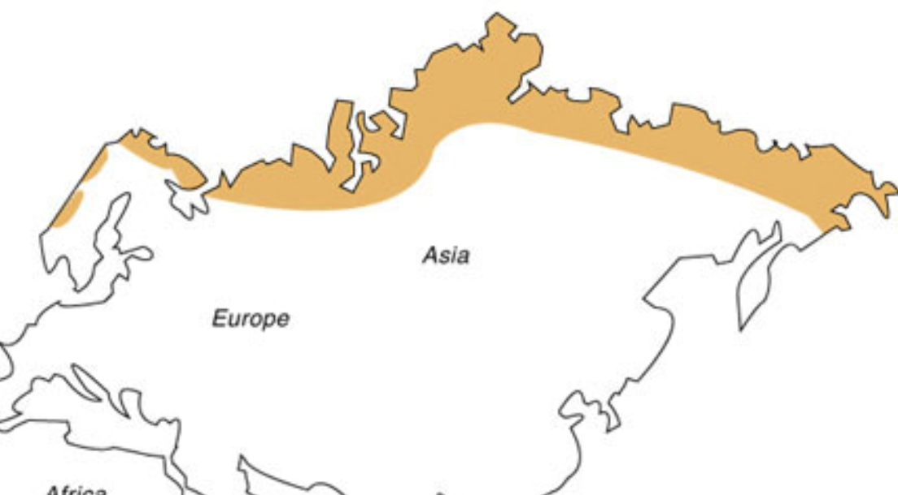
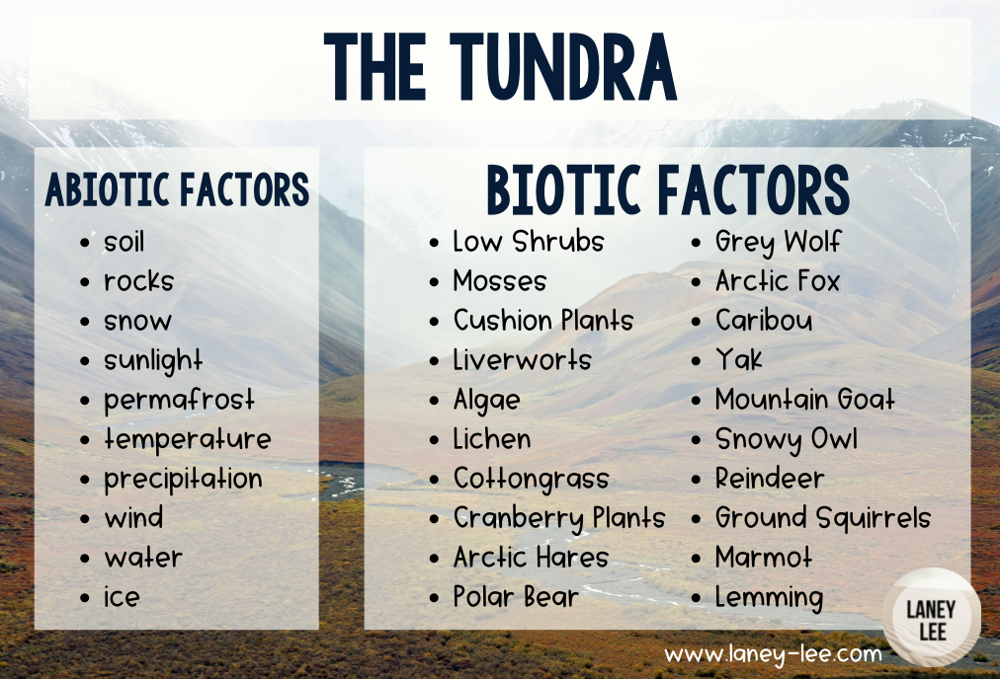

Tools and Equipment
- Thermal Sleeping Bag
- Lifestraw
- Snare Wire
- Emergency Shelter (Bivy Sack or Tent)
- Fire Starting Kit (Magnesium Rod & Waterproof Matches)
- High-Calorie Non-Perishable Food (Energy Bars, Dried Meat, Nuts)
- Food/Water Container
- Navigation Tools (GPS & Compass with a Map)
- First Aid Kit (With Frostbite & Hypothermia Treatments)
- Multi-Tool (With Knife, Pliers and Screwdriver)



Climate & Characteristics
-
Shelter
- Seek natural windbreaks like rock formations, dense shrubbery, or caves to shield from harsh winds.
- If deep snow is available, a quinzhee (snow mound with a hollowed-out center) provides insulation.
- If carrying an emergency tent, set it up in a low-wind area, using snow walls to reinforce it against storms.
- Use moss, leaves, or dry grass inside the shelter for extra warmth and comfort.
-
Food and Water
- Use makeshift fishing lines in rivers, or ice fish by cutting a hole in icy lakes.
- Collect edible lichens, berries and roots, even though they may be scarce.
- Small game, such as Arctic hares and ptarmigans (species of bird) can be trapped with snares.
- High-calorie emergency food supplies are essential due to the difficulty of hunting and foraging.
-
Warmth
- Build a fire using dry twigs, moss, or carried fuel. Fires can provide warmth, cooks food and prevents hypothermia.
- Use your insulated sleeping bag at night, to conserve heat.
- Avoid sweating by wearing numerous layers of clothing, and taking them off when near warmth.
- Ensure you build your shelter in a less windy area, also you should cover the ground with leaves and branches.
-
Safety
- Store food away from the sleeping area to avoid attracting predators. Make loud noises when threatened in order to deter them.
- Test ice thickness before crossing lakes and rivers, thick ice should be at least 10cm thick for safety.
- Use your navigation tools to ensure you don't get lost in the featureless Tundra.
-
Other Hazards or Obstacles
- Protect your fingers, toes and ears from frostbite with proper gear, keep moving to maintain circulation.
- Stay in your shelter during blizzards (and whiteouts), low visibility can lead to disorientation.
- To prevent mental strain, keep yourself occupied and always be doing productive activities in your time.
